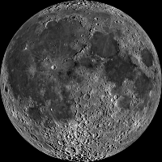

<!DOCTYPE html>
<html lang="en">

<head>
  <meta charset="utf-8">
  <title>Style an HTML Table</title>
  <link rel="preconnect" href="https://fonts.googleapis.com">
	<link rel="preconnect" href="https://fonts.gstatic.com" crossorigin>
	<link href="https://fonts.googleapis.com/css2?family=Coda:wght@400;800&display=swap" rel="stylesheet">
	<link rel="stylesheet" type="text/css" href="css/normalize.css">
  <link rel="stylesheet" type="text/css" href="css/style.css">
</head>

<body>
	<div id="page-wrapper">
		<header id="header">
			<h1>Planetary Fact Sheet</h1>
		</header>
		<table id="planets">
			<tr>
				<th></th>
				<th>VENUS</th>
				<th>EARTH</th>
				<th>MOON</th>
				<th>MARS</th>
			</tr>
			<tr>
				<td>Images of some Planets</td>
				<td></td>
				<td></td>
				<td></td>
				<td></td>
			</tr>
			<tr>
				<td>Mass (10<sup>24</sup>kg)</td>
				<td>4.87</td>
				<td>5.97</td>
				<td>0.073</td>
				<td>0.642</td>
			</tr>
			<tr>
				<td>Rotation Period (hours)</td>
				<td>-5832.5</td>
				<td>23.9</td>
				<td>655.7</td>
				<td>24.6</td>
			</tr>
			<tr>
				<td>Length of Day (hours)</td>
				<td>2802.0</td>
				<td>24.0</td>
				<td>708.7</td>
				<td>24.7</td>
			</tr>
			<tr>
				<td>Distance from Sun (10<sup>6</sup>km)</td>
				<td>108.2</td>
				<td>149.6</td>
				<td>0.384&#42;</td>
				<td>228.0</td>
			</tr>
			<tr>
				<td>Orbital Period (days)</td>
				<td>224.7</td>
				<td>365.2</td>
				<td>27.3</td>
				<td>687.0</td>
			</tr>
			<tr>
				<td>Number of Moons</td>
				<td>0</td>
				<td>1</td>
				<td>0</td>
				<td>2</td>
			</tr>
			<tr>
				<td>Global Magnetic Field?</td>
				<td>No</td>
				<td>Yes</td>
				<td>No</td>
				<td>No</td>
			</tr>
		</table>
		<div>
			<div id="first">
					<p><strong>Mass</strong> (10<sup>24</sup>kg or 10<sup>21</sup>tons) - This is the mass of the planet in septillion (1 followed by 24 zeros) kilograms or sextillion (1 followed by 21 zeros) tons. Strikly speacking tons are measures of weight, not mass, but are used here to represent the mass of one ton of material under Earth gravity.</p>
					<p><strong>Rotation Period</strong> (hours) - This is the time it takes for the planet to complete one rotation relative to the fixed background stars (not relative to the Sun) in hours. Negative numbers indicate retrograde (backwards relative to the Earth) rotation.</p>
					<p><strong>Length of Day</strong> (hours) - The average time in hours for the Sun to move from the noon position in the sky at a point on the equator back to the same position.</p>
			</div>
			<div id="second">
					<p><strong>Distance from Sun</strong> (10<sup>6</sup> km or 10<sup>6</sup> miles) - This is the average distance from the planet to the Sun in millions of kilometers or millions of miles, also known as the semi-major in the orbit at which are elliptical, not perfectly circular, so there is a point from the Sun, the aphelion. The average distance from the Sun is midway between these two values. The average distance from  the Earth to the Sun is defined as &#24; For the Moon, the average distance from the Earth is given.</p>
					<p><strong>Orbital Inclination</strong> (degrees) - The angle in degrees at which a planets orbit around the Sun is tilted relative to the ecliptic plane. The ecliptic plane is defined as the plane containing the Earth's orbit, so the Earth's inclinaiton is 0.</p>
					<p><strong>Number of Moons</strong> - This gives the number of IAU officially confirmed moons orbiting the planet. New moons are still being discovered.</p>
					<p><strong>Global Magnetic Field?</strong> - This tells whether the planet has a measurable large-scale magnetic field. Mars and the Moon have localized regional magnetic fields but no global field.</p>
			</div>
			<div>
				<p class="para"><strong>Note:</strong> That Venus, Earth, Moon, Mars (as well as Mercury and Pluto) are refers to as "terrestial planets" while Jupiter, Saturn, Uranus, and Neptune are refers to as "gas giants".</p>
			</div>
		</div>
		<footer id="footer">
			<section>
				<h4>Contact</h4>
				<ul>
					<li><a href="mailto:maxwellonyemaruche@gmail.com">Email</a></li>
					<li><a href="https://github.com/maxo-tech">GitHub</a></li>
					<li><a href="https://www.linkedin.com/in/maxwell-onyemaruche-752522230">LinkedIn</a></li>
					<li><a href="https://x.com/onyemaruche">X (twitter)</a></li>
				</ul>
			</section>
			<section>
				<h4>Appreciation</h4>
				<ul>
					<li><a href="https://www.coursera.org/">Coursera</a></li>
					<li><a href="https://www.iit.edu/">IIT</a></li>
					<li><a href="https://github.com/dkriegls">Daniel Krieglstein PhD</a></li>
				</ul>
			</section>
			<ul>
				<li>Design by <a href="https://www.linkedin.com/in/maxwell-onyemaruche-752522230">Maxwell Onyemaruche</a> for <a href="https://github.com/maxo-tech">Maxo-tech</a></li>
				<li>&copy;2024 <a href="https://github.com/maxo-tech">Maxo-tech</a> - All Right Reserved</li>
			</ul>
		</footer>
	</div>
</body>

</html>
